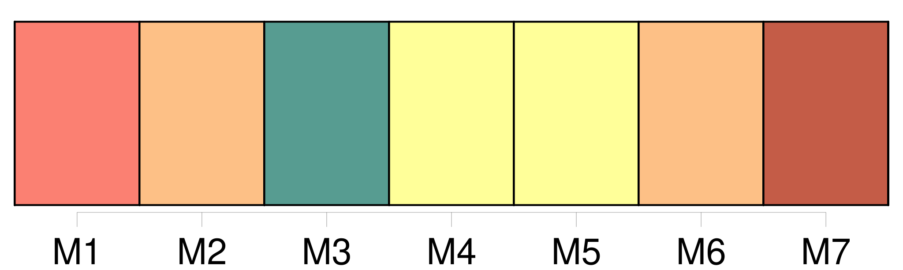
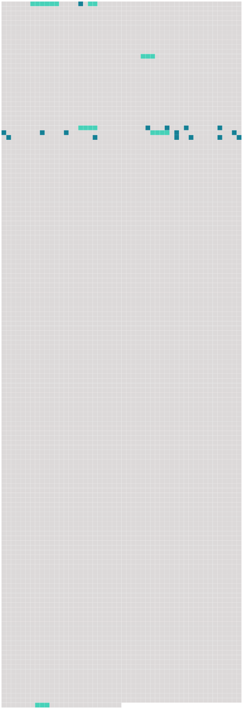

Longueur nb maillons : 22 mentions |
 |
Elle se leva, en voyant [une femme penchée sur ses navets] — C'est [vous] , [mère Chantemesse] ?? [23 phrases] Madame François causait avec [la mère Chantemesse] , debout, discutant le prix de la botte de navets. [28 phrases]
Il revoyait les fenêtres luisantes des boulevards, les femmes rieuses, la ville gourmande qu'il avait laissée par cette lointaine nuit de janvier ; et il lui semblait que tout cela avait grandi, s'était épanoui dans cette énormité des Halles, dont il commençait à entendre le souffle colossal, épais encore de l'indigestion de la veille [.La mère Chantemesse] s'était décidée à acheter douze bottes de navets.
[Elle] les tenait dans [son] tablier, sur [son] ventre, ce qui arrondissait encore [sa] large taille ; et [elle] restait là, causant toujours, de [sa] voix traînante.
Quand [elle] fut partie, madame François vint se rasseoir à côté de Florent, en disant : J'étais gamine, qu' [elle] achetait déjà [ses] navets à mon père. Et pas un parent avec ça, rien qu'une coureuse qu' [elle] a ramassée je ne sais où, et qui la fait damner …… Eh bien, [elle] vivote, [elle] vend au petit tas, [elle] se fait encore [ses] quarante sous par jour …… [266 phrases] Ils faisaient un joli couple, lui et cette gueuse de Cadine, que [la mère Chantemesse] avait ramassée, un soir, au coin de l'ancien marché des Innocents. |
 |
Il est possible de télécharger la ressource sur la page Ortolang |
Si vous avez des questions ou vous voyez des erreurs, merci d'envoyer un mail à silvia.federzoni89@gmail.com |